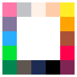

PICO-Z
Play any PICO-8 game on your desktop or in the browser. Save your progress anytime.
Getting started
- Get a game — find .p8 or .p8.png carts on the PICO-8 BBS
- Open it — drag the cart file onto the PICO-Z window
- Save anytime — press P to save your progress, L to load it back
Controls
- ↑↓←→ Move
- ZC O button
- XV X button
- P Save state
- L Load state
- R Reload cart
Gamepads and mouse also supported.